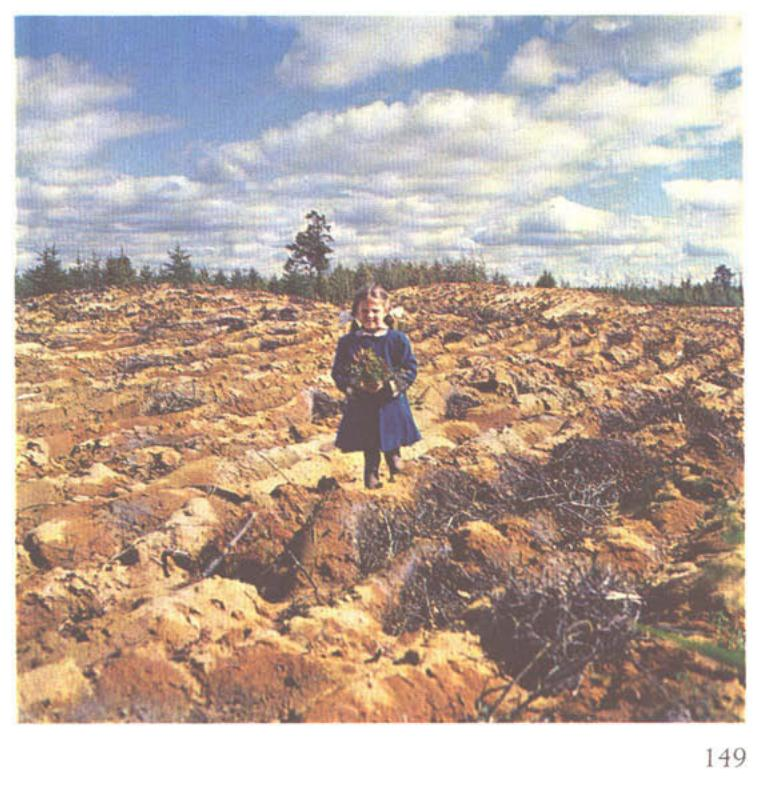

Identification & Caractéristiques Générales
La série de sol L'Afrique se développe sur des dépôts meubles éoliens sableux ou des sables deltaïques remaniés, associés aux paléo-rivages et aux accumulations sablonneuses de la région du Lac-Saint-Jean, notamment au nord de Saint-Léon-de-Chicoutimi. Ce matériau parental, constitué de sable fin à très fin, est mis en place sous forme de modelés dunaires et de topographies vallonnées caractérisées par des coteaux aux pentes irrégulières.
Morphologiquement, le profil présente des caractéristiques de lessivage prononcé avec le développement d'un horizon spodique, typique des podzols, surmonté d'un horizon éluvial appauvri. Le drainage naturel varie de bon à excessif en raison de la texture grossière et de la forte perméabilité verticale du substrat sablonneux. Cette condition entraîne une faible rétention en eau utile et une susceptibilité marquée au stress hydrique estival. La réaction du sol est fortement acide et la pierrosité en surface est généralement nulle, bien que le profil subisse une vulnérabilité extrême à l'érosion éolienne (classe d'érosion très sévère) lorsque le couvert végétal protecteur est perturbé.
Sur le plan agronomique, les sols de la série L'Afrique sont classés comme impropres à la production agricole conventionnelle (classe 6). Les principales limitations découlent de la pauvreté en éléments nutritifs, de la faible capacité d'échange cationique, de la sécheresse inhérente et de l'instabilité structurale du sable face au vent. L'utilisation de ces terres est strictement marginale pour l'agriculture et requiert des interventions de reboisement et de stabilisation végétale pour enrayer l'érosion éolienne active et restaurer le couvert forestier composé de résineux et d'espèces tolérant les sols oligotrophes.
Classification Taxonomique & Environnement Pédologique
| Ordre Pédologique | Podzolique |
|---|---|
| Grand Groupe (SCSS) | Podzol humo-ferrique |
| Sous-Groupe Taxonomique | Podzol humo-ferrique orthique |
| Famille Pédologique | Sableuse, siliceuse, acide |
| Mode de Dépôt Parental | Éolien |
| Classe de Drainage Naturel | Rapidement drainé |
| Régime Thermique & Humidité | Frais / Semi-aride |
Description Morphologique du Profil Type
Séquence génétique des horizons pédologiques caractérisant le profil type représentatif de la série L'Afrique :
Profil représentatif — Pédologie de la région du Lac-Sa
✓ Source : Pédologie de la région du Lac-Sa — Page 117Couleur Munsell : Non précisée
Structure & Consistance : Polyédrique à granulaire
Description morphologique : Tourbe fibreuse, matière organique en voie de décomposition; aiguilles.
Couleur Munsell : 7.5YR 8/2
Structure & Consistance : Polyédrique à granulaire
Description morphologique : Sable fin blanc-rose (7.5YR 8/2).
Couleur Munsell : 10YR 5/8, 10YR 6/8
Structure & Consistance : Polyédrique à granulaire
Description morphologique : Sable brun-jaune (10YR 5/8) à jaune-brun (10YR 6/8); pH: 5.2.
Couleur Munsell : 2.5Y 6/6
Structure & Consistance : Polyédrique à granulaire
Description morphologique : Sable jaune-olive (2.5Y 6/6 à 6.8); pH: 5.4.
Couleur Munsell : 5Y 8/6, 5Y 8/4
Structure & Consistance : Polyédrique à granulaire
Description morphologique : Sable jaune (5Y 8/6) à jaune pâle (5Y 8/4); pH: 5.8.
Couleur Munsell : 5Y 8/2, 5Y 8/3
Structure & Consistance : Polyédrique à granulaire
Description morphologique : Sable blanc (5Y 8/2) à jaune pâle (5Y 8/3) avec grains noirs; pH: 5.7.
Profils Photographiques & Planches de Terrain
Documents iconographiques, figures pédologiques et coupes de terrain documentées dans les mémoires d'inventaire pour de la série L'Afrique :

Propriétés Physico-Chimiques & Analyses de Laboratoire
Données Analytiques de Laboratoire
Aucune analyse physico-chimique quantitative de laboratoire (granulométrie par sédimentométrie, pH H₂O/CaCl₂, matière organique Walkley-Black ou bases échangeables) n'a été consignée pour cette unité dans les archives historiques numérisées ou les bases contemporaines EESSAQ/MAPAQ.
Particularités Régionales, Phases & Variantes Pédologiques
Déclinaisons régionales, faciès texturaux, phases d'érosion ou de pierrosité et variantes cartographiées par étude pour de la série L'Afrique :
| Étude Régionale | Symbole | Appellation / Phase / Variante | Différenciation avec la série type (Analyse pédologique) |
|---|---|---|---|
| Comté de Chicoutimi | Lf |
L'Afrique sable fin à sable très fin | Modalité modale de référence (type de base de la série). |
| Pédologie de la région du Lac-Saint-Jean | Lf |
L'Afrique sable fin à sable très fin | Conforme à la série type de référence (caractéristiques texturales et drainage identiques). |
Distribution Pédo-Paysagère & Représentativité Cartographique (Couverture PPS 2026)
- Parent sable (PAT) — co-occurrente dans 175 polygone(s)
- Saint-Méthode sable (SIO) — co-occurrente dans 125 polygone(s)
- L'Ascension sable grossier (LSC) — co-occurrente dans 104 polygone(s)
Aptitudes Agronomiques, Hydropédologie & Conservation des Sols
Indicateurs Hydropédologiques & Vulnérabilité à l'Érosion (BDHP 2026)
Interprétation BDHP : Potentiel de ruissellement faible. Sols à infiltration rapide (sables profonds, graviers bien drainés).
Classement selon l'Inventaire des Terres du Canada (ITC / CLI) : Classe 3w.
- Potentiel agricole : Terroir adapté aux cultures régionales selon la texture dominante et la régie de drainage.
- Contraintes majeures : Rapidement drainé. Risque d'engorgement temporaire ou d'excès d'eau printanier.
- Gestion & Aménagement : Drainage souterrain ou superficiel préconisé sur les terres planes. Chaulage et apport organique régulier selon les bilans agronomiques.
- Cultures adaptées : Grandes cultures (maïs, soya, céréales), prairies fourragères et cultures maraîchères selon le contexte géomorphologique.